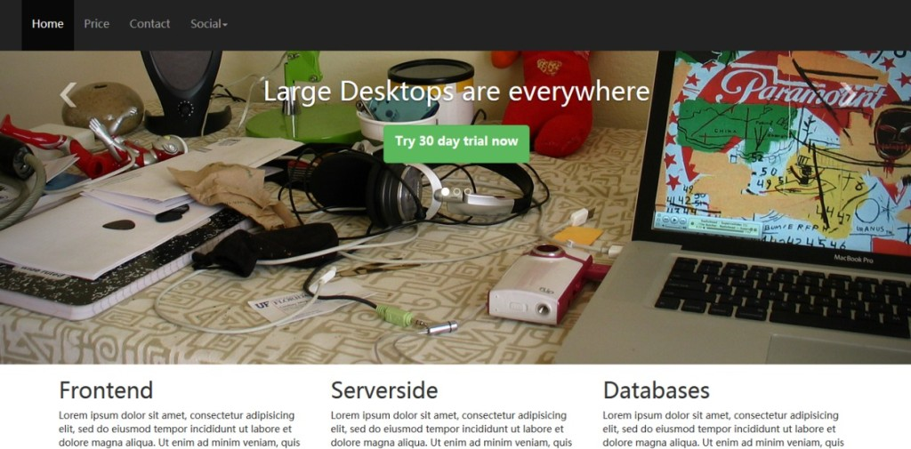

Bootstrap Introduction
Goal
Bootstrap is the most popular front-end framework, and its third version (v3.0.0) has already been released. This tutorial will get you started with Bootstrap 3.
You will also see how to use customization to make the framework distinctive, such as creating layouts with grids, creating navigation with nav, creating slideshows with carousel, and adding third-party plugins like social plugins and Google Maps.

What is Bootstrap
Bootstrap is a front-end framework for rapidly developing web applications and websites.
In modern web development, there are several components that are needed in almost all web projects.
Bootstrap provides you with all these basic modules - Grid, Typography, Tables, Forms, Buttons, and Responsiveness.
In addition, there are many other useful front-end components, such as Dropdowns, Navigation, Modals, Typehead, Pagination, Carousel, Breadcrumb, Tabs, Thumbnails, Headers, and so on.
With these, you can build a web project and get it running more quickly and easily.
Moreover, since the entire framework is module-based, you can customize it with your own CSS code, or even a major overhaul after the project has started.
It is based on several best practices, and we believe this is a good time to start learning modern web development. Once you have mastered the basics of HTML and JavaScript/jQuery, you can apply this knowledge in web development.
Although there is criticism that all projects built with Bootstrap look the same, and you can build a website without knowing too much HTML + CSS, we need to understand that Bootstrap is a general-purpose framework. Like anything else that is general-purpose, you need to customize it to make it unique. When you customize it, you need to dig deeper, and without a solid HTML + CSS foundation, it is not feasible.
Of course, besides Bootstrap, there are many other good front-end frameworks. Which framework to use is a developer's choice, but Bootstrap is definitely worth trying.
Whyuse it in your projectuse Bootstrap?
Download and Understand the File Structure
You canhttps://github.com/twbs/bootstrap/archive/v3.0.0.zip 或 https://github.com/twbs/bootstrap/releases/download/v3.0.0/bootstrap-3.0.0-dist.zipdownload Bootstrap Version 3.0.0. We are using the first one, and you can also use the second.
In addition, the code we provide for download contains a Bootstrap code folder downloaded through the first link. It also includes custom.css, which contains the original CSS used to customize Bootstrap.
After unzipping, you will find that there are some files and folders in the root folder bootstrap-3.0.0.
The main CSS file - bootstrap.css and its minified version bootstrap-min.css - is located in the 'css' folder inside the 'dist' folder under the root folder bootstrap-3.0.0.
Inside 'dist', there is a 'js' folder that contains the main JavaScript file bootstrap.js and its minified version.
In the root folder, there is a separate 'js' folder that contains different JavaScript plugins in different files.
In the 'assets' folder within the root directory, you will find another 'js' folder. Here sits html5shiv.js of the HTML5 shim, used to gain IE8 support. There is also a respond.min.js file, used to support media queries in IE8. This folder also contains jquery.js, which the Bootstrap js plugins depend on.
In the same folder, there is an 'ico' folder, containing the favicon icon and various mobile device icons.
The 'css' folder in the same path contains the css files for the document.
The '_includes' and '_layouts' folders contain some default layout structure files, which may be useful for rapid prototyping.
The 'less' folder in the root folder contains some .less files. These files will be useful if you are developing based on LESS.
In the root folder, there are some files. Some are HTML files for basic prototyping, and some are bower.json and browserstack.json for Bower-based compilation. In addition, there are composer.json and a YAML file _config.yml.
In addition to downloading from the given link, you can also use the following command to compile all CSS and JS files -
$ bower install bootstrap
You can clone Bootstrap's Git repository.
git clone git://github.com/twbs/bootstrap.git
In this tutorial, we only downloaded the Zip file and will not use it.
Once you have learned this tutorial, we encourage you to install the framework via bower to understand how it works.
NetDNA supports compiled and minified versions of Bootstrap CSS, JS, and other theme CSS. You can reference them with the following statements.
<!-- Latest compiled and minified CSS --> <link rel="stylesheet" href="//netdna.bootstrapcdn.com/bootstrap/3.0.0/css/bootstrap.min.css"> <!-- Optional theme --> <link rel="stylesheet" href="//netdna.bootstrapcdn.com/bootstrap/3.0.0/css/bootstrap-theme.min.css"> <!-- Latest compiled and minified JavaScript --> <script src="//netdna.bootstrapcdn.com/bootstrap/3.0.0/js/bootstrap.min.js"></script>
Developing with Bootstrap v3.0.0
Basic HTML
The following is the basic HTML structure that will be used for our project.
<!DOCTYPE html>
<html>
<head>
<title>Bootstrap V3 template</title>
<meta name="viewport" content="width=device-width, initial-scale=1.0">
<!-- Bootstrap -->
<link href="bootstrap-3.0.0/dist/css/bootstrap.min.css.html" rel="stylesheet" media="screen">
<!-- HTML5 shim and Respond.js IE8 support of HTML5 elements and media queries -->
<!--[if lt IE 9]>
<script src="bootstrap-3.0.0/assets/js/html5shiv.js.html"></script>
<script src="bootstrap-3.0.0/assets/js/respond.min.js.html"></script>
<![endif]-->
</head>
<body>
<h1>Hello, world!</h1>
<!-- jQuery (necessary for Bootstrap's JavaScript plugins) -->
<script src="//code.jquery.com/jquery.js"></script>
<!-- Include all compiled plugins (below), or include individual files as needed -->
<script src="bootstrap-3.0.0/dist/js/bootstrap.min.js.html"></script>
</body>
</html>
Please note that the template addshtml5shiv.js and respond.min.js are used to gain IE8 support. These files were added in Bootstrap version 3.
We have placed the bootstrap-3.0.0 folder inside the twitter-bootstrap folder within the root folder of the web server. All HTML files we create will be placed inside twitter-bootstrap. We mention this to simplify our development process.
Customization
We willcustomize a distinctive CSS box style. Therefore, without breaking the original CSS files (located in the dist folder of bootstrap-3.0.0), in the same folder, we will create a separate CSS file named custom.css. Then in the HTML file, we reference this CSS file right after the original CSS file. This way, we can override the default styles we want to change, but if Bootstrap is upgraded, the original CSS files will also be updated without breaking our customizations. We recommend you follow this approach during development.
Creating Navigation
To create navigation, add the following code in the HTML file, right after the opening body tag.
<nav class="navbar navbar-inverse navbar-fixed-top" role="navigation">
<ul class="nav navbar-nav">
<li><a href="new.html" class="navbar-brand">
<img src="logo.png.html"></a></li>
<li class="active"><a href="../index.html">Home</a></li>
<li><a href="price.html">Price</a></li>
<li><a href="contact.html">Contact</a></li>
<li class="dropdown">
<a href="../index.html" class="dropdown-toggle" data-toggle="dropdown">Social<b class="caret"></b></a>
<ul class="dropdown-menu">
<li class="socials"><g:plusone annotation="inline" width="150"></g:plusone></li>
<li class="socials"><div class="fb-like" data-href="https://developers.facebook.com/docs/plugins/" data-width="The pixel width of the plugin" data-height="The pixel height of the plugin" data-colorscheme="light" data-layout="standard" data-action="like" data-show-faces="true" data-send="false"></div></li>
<li class="socials"><a href="https://twitter.com/share" class="twitter-share-button">Tweet</a>
<script>!function(d,s,id){var js,fjs=d.getElementsByTagName(s)[0];if(!d.getElementById(id)){js=d.createElement(s);js.id=id;js.src="//platform.twitter.com/widgets.js";fjs.parentNode.insertBefore(js,fjs);}}(document,"script","twitter-wjs");</script></li>
</ul>
</li>
</ul>
</nav>
For navigation, Bootstrap uses the 'navbar' class at the container level. So, it is assigned to the nav element that holds the entire navigation.
We have used the 'navbar-inverse' class to change the default colors of the navigation bar, using a dark color instead of the previous light default. The 'navbar-fixed-top' class ensures that the navigation bar stays fixed at the top when we scroll down the HTML page.
In Bootstrap V3.0.0, using role="navigation" when creating navigation is a new addition.Bootstrap recommends this usage so that the navigation baris easily accessible.。
At this point, we added 'padding-top: 80px;' to the body in the custom.css file. The pixels you add as top padding to the body may vary, but unless you do this, the top part of the content after the navigation bar will be hidden.
Inside the container nav, we have an unordered list with the classes 'nav' and 'navbar-nav'. Within this unordered list, each list item contains a link from the navigation.
The 'navbar-brand' class is used to render the brand name. We have used an image. Since the image height is greater than the navbar baseline height, we do some customization here. Increase the 'line-height' property of '.navbar-nav>li>a' from the original default of 20px to 50px, and change the font size to 16px.
For the rightmost link, we have added a dropdown. For the 'dropdown' class added to the relevant li, immediately after it, add an anchor with the two classes 'dropdown-toggle' and 'caret'. This anchor actually contains the anchor text "social" from our project. This li then contains an unordered list, and each list item nested in the list contains the links displayed in the dropdown.
In the dropdown we have added social plugins. The first li contains the Google Plus markup, the second li contains the Facebook markup, and the third li contains the markup for displaying the Twitter button and some JS scripts.
Additionally, you must add the following markup and script after the opening tag of the body to make the Facebook button work.
<div id="fb-root"></div>
(function(d, s, id) {
var js, fjs = d.getElementsByTagName(s)[0];
if (d.getElementById(id)) return;
js = d.createElement(s); js.id = id;
js.src = "//connect.facebook.net/en_US/all.js#xfbml=1";
fjs.parentNode.insertBefore(js, fjs);
}(document, 'script', 'facebook-jssdk'));
To make the Twitter button work, we add the following script before the closing tag of the body.
(function() {
var po = document.createElement('script'); po.type = 'text/javascript'; po.async = true;
po.src = 'https://apis.google.com/js/plusone.js';
var s = document.getElementsByTagName('script')[0]; s.parentNode.insertBefore(po, s);
})();
We use the following styles to add some extra styling to the social buttons with the 'socials' class.
.socials {
padding: 10px;
}
This completes our navigation.
Creating Slideshows with Carousel
To create a slideshow below the navigation bar on the project's homepage, we will use the following markup.
<div id="carousel-example-generic" class="carousel slide">
<!-- Indicators -->
<ol class="carousel-indicators">
<li data-target="#carousel-example-generic" data-slide-to="0" class="active"></li>
<li data-target="#carousel-example-generic" data-slide-to="1"></li>
<li data-target="#carousel-example-generic" data-slide-to="2"></li>
</ol>
<!-- Wrapper for slides -->
<div class="carousel-inner">
<div class="item active">
<img src="computer.jpg.html" alt="...">
<div class="carousel-caption">
<h1>Large Desktops are everywhere</h1>
<p><button class="btn btn-success btn-lg">Try 30 day trial now</p>
</div>
</div>
<div class="item">
<img src="mobile.jpg.html" alt="...">
<div class="carousel-caption">
<h1>Mobiles are outnumbering desktops</h1>
<p><button class="btn btn-success btn-lg">Try 30 day trial now</p>
</div>
</div>
<div class="item">
<img src="cloud1.jpg.html" alt="...">
<div class="carousel-caption">
<h1>Enterprises are adopting Cloud computing fast</h1>
<p><button class="btn btn-success btn-lg">Try 30 day trial now</p>
</div>
</div>
</div>
<!-- Controls -->
<a class="left carousel-control" href="../index.html" data-slide="prev">
<span class="icon-prev"></span>
</a>
<a class="right carousel-control" href="../index.html" data-slide="next">
<span class="icon-next"></span>
</a>
</div>
</div>
There are four sections in the Carousel. The main container is defined using a div tag with the 'carousel slide' class.
Then there is an ordered list with the 'carousel-indicators' class. Each list item in the ol represents a slide. When the page loads, the slide loaded by default has the 'active' class. When rendered, you will see them as small circles below the caption.
Then, each slide (image) is placed in a div tag with the 'item' class. Each item is nested within a div with the 'carousel-caption' class. The carousel-caption contains some markup displayed as a caption along with the image. The paragraph contains an h1 and a button; you can also include other markup of your own.
The last part is for controlling the next/previous slide. This uses the 'left' and 'carousel-control' classes to define the previous one, and the 'right' and 'carousel-control' classes to define the next one.
The 'icon-prev' and 'icon-next' classes are used for the next and previous icons.
We havemade some customizations to the default carousel.We want the captions, indicators, and next/previous icons to be rendered a few pixels above their default positions.
To achieve this, we add the following styles in the custom.css file.
.carousel-inner .item .carousel-caption {
position:absolute;
top: 200px
}
.carousel-indicators {
position: absolute;
top: 400px;
}
.navbar {
margin-bottom:0;
}
.navbar-nav>li>a {
line-height: 50px;
font-size: 16px
}
We also customized the h1, adding a 30-pixel bottom margin to it.
h1 {
margin-bottom: 30px
}
Responsive Images
You may have noticed that for each image in the slideshow, we have used the 'img-responsive' class. This is a new feature in Bootstrap v3.0.0.By using the 'img-responsive' class in the img tag, Bootstrap makes the image responsive.。
Creating Grids
Below the slideshow, we use a grid to place content. Start a grid with a div having the 'container' class. Note that we are going to develop a responsive website, and unlike previous versions of Bootstrap, here the container has a single class and is responsive by default.
The container div nests several divs with the 'row' class (three in the first row, six in the second row) to create rows in the Bootstrap grid.
Each row has a div with a 'col-x-y' class to create columns. The value of x can be: xs for mobile devices, sm for tablets, md for laptops and smaller desktop screens, and lg for large desktop screens. This is the first approach. The value of y can be any positive integer, but the total number of columns in a grid must not exceed 12. In our project, for simplicity, we have used lg, but since we have done so, you might want to view the project site on a phone or tablet to compare.
In a later tutorial, we will have a full tutorial on the Bootstrap grid system to explore its fascinating responsive features.
In this example, we want the three columns in the first row to have equal widths, so we use 'col-lg-4' for all columns. In the second row, we want the six columns to have equal widths, so we use 'col-lg-2' for all columns.
Below is the markup for a grid containing two rows, the first row has three columns, and the second row has six columns.
<div class="row barone"> <div class="col-lg-2"> <p><img src="../wp-content/uploads/2013/10/php.png"></p> </div> <div class="col-lg-2"> <p><img src="../wp-content/uploads/2013/10/mysql-logo.jpg"></p> </div> <div class="col-lg-2"> <p><img src="../wp-content/uploads/2013/10/javascript-logo.png"></p> </div> <div class="col-lg-2"> <p><img src="../wp-content/uploads/2013/10/java.jpg"></p> </div> <div class="col-lg-2"> <p><img src="../wp-content/uploads/2013/10/postgresql.png"></p> </div> </div>
We end the grid with an hr and a footer with the following markup.
<hr> <p>Copyright@2013-14 by ToDo App.</p>
Using Tables
In our project's price.html page, we used a table to present a price list, with the markup shown below.
<table class="table table-bordered">
<thead>
<tr>
<th>Features</th>
<th>Individual</th>
<th>Small Team</th>
<th>Medium Team</th>
<th>Enterprise</th>
</tr>
</thead>
<tbody>
<tr>
<td><h3>No. Of users</h3></td>
<td><span class="badge">One</span></td>
<td><span class="badge">Five</span></td>
<td><span class="badge">Fifteen</span></td>
<td><span class="badge">Unlimited</span></td>
</tr>
<tr>
<td><h3>Pro training</h3></td>
<td><span class="badge">No</span></td>
<td><span class="badge">Yes</span></td>
<td><span class="badge">Yes</span></td>
<td><span class="badge">Yes</span></td>
</tr>
<tr>
<td><h3>Forum Support</h3></td>
<td><span class="badge">Yes</span></td>
<td><span class="badge">Yes</span></td>
<td><span class="badge">Yes</span></td>
<td><span class="badge">Yes</span></td>
</tr>
<tr>
<td><h3>In person support</h3></td>
<td><span class="badge">No</span></td>
<td><span class="badge">No</span></td>
<td><span class="badge">Yes</span></td>
<td><span class="badge">Yes</span></td>
</tr>
<tr>
<td><h3>Weekly webinars</h3></td>
<td><span class="badge">No</span></td>
<td><span class="badge">No</span></td>
<td><span class="badge">Yes</span></td>
<td><span class="badge">Yes</span></td>
</tr>
<tr>
<td><h3>Price</h3></td>
<td><button type="button" class="btn btn-warning btn-lg">$9/Month</button></td>
<td><button type="button" class="btn btn-warning btn-lg">$19/Month</button></td>
<td><button type="button" class="btn btn-warning btn-lg">$49/Month</button></td>
<td><button type="button" class="btn btn-warning btn-lg">$99/Month</button></td>
</tr>
<tr>
<td></td>
<td><button type="button" class="btn btn-success btn-lg">Buy now</button></td>
<td><button type="button" class="btn btn-success btn-lg"">Buy now</button></td>
<td><button type="button" class="btn btn-success btn-lg"">Buy now</button></td>
<td><button type="button" class="btn btn-success btn-lg"">Buy now</button></td>
</tr>
</tbody>
</table>
We use the 'table' and 'table-bordered' classes from the original Bootstrap CSS file. However, we have customized it by adding the following CSS in the customize.css fileto make some customizations so that the table looks different.
th {
background-color: #428bca;
color: #ec8007;
z-index: 10;
text-shadow: 1px 1px 1px #fff;
font-size: 24px;
}
Using Badges
We use the 'badge' class to display some text in the table. We have a custom badge class with the following CSS.
.badge {
background-color: #428bca;
color: #fff;
font-size: 22px;
}
For this page and the contact.html page, we added another CSS rule in customize.css.
.container > h1 {
text-align: center;
}
This aligns the h1 to the center.
Using Forms
In the contact.html file, we created three columns. In the first column, we embed a form. The form uses default styles.
<form class="form-horizontal" role="form">
<div class="form-group">
<label for="email" class="col-lg-2 control-label">Email</label>
<div class="col-lg-10">
<input type="email" class="form-control" id="email" placeholder="Email">
</div>
</div>
<div class="form-group">
<label for="name" class="col-lg-2 control-label">Name</label>
<div class="col-lg-10">
<input type="text" class="form-control" id="name" placeholder="Name">
</div>
</div>
<div class="form-group">
<label for="country" class="col-lg-2 control-label">Country</label>
<div class="col-lg-10">
<select>
<option>USA</option>
<option>India</option>
<option>UK</option>
<option>Autralia</option>
</select>
</div>
</div>
<div class="form-group">
<label for="desc" class="col-lg-2 control-label">Message</label>
<div class="col-lg-10">
<textarea rows="5" cols="50"></textarea>
</div>
</div>
<div class="form-group">
<div class="col-lg-offset-2 col-lg-10">
<button type="submit" class="btn btn-default">Submit</button>
</div>
</div>
</form>
The 'form-horizontal' class keeps the form horizontally aligned.Note that we add role="form" for accessibility. This is a new feature in version 3.0.0.
To position each form control, Bootstrap 3.0.0 uses a new 'form-group' class.
In this page, in the second column of the grid, we simply place some text.
Adding Google Maps
In the contact.html page, in the third column of the grid, we added a Google Map. To do this, we used the following markup.
<div id="map_canvas"></div> </div>
The following js is added to the head section of the HTML file.
function initialize() {
var map_canvas = document.getElementById('map_canvas');
var map_options = {
center: new google.maps.LatLng(23.244066, 87.861276),
zoom: 8,
mapTypeId: google.maps.MapTypeId.ROADMAP
}
var map = new google.maps.Map(map_canvas, map_options)
}
google.maps.event.addDomListener(window, 'load', initialize);
Before the aforementioned js, you must add the following script tag.
<script src="http://maps.googleapis.com/maps/api/js?sensor=false"></script>
In order for the map to render correctly, you must add the following styles to custom.css.
#map_canvas {
width: 400px;
height: 400px;
}
Thus, this is how to create a simple project based on Bootstrap V3.0.0. But we have only scratched the surface; later chapters will provide more detailed explanations.
Other Extensions
Click me to share notes
<p style="font-size:14px;">Notes must be an expansion of the content of this article!</p><br> <p style="font-size:12px;"><a href="../tougao.html" target="_blank">Article submission, click here</a></p> <p style="font-size:14px;"><a href="../w3cnote/runoob-user-test-intro.html" target="_blank">How to get a registration invitation code</a></p> <h3 class="text-muted"><i class="fa fa-info-circle" aria-hidden="true"></i> You must <a href=";.html" class="runoob-pop">log in</a> before sharing notes!</h3> <p><a href="../w3cnote/runoob-user-test-intro.html" target="_blank">How to get a registration invitation code</a></p>